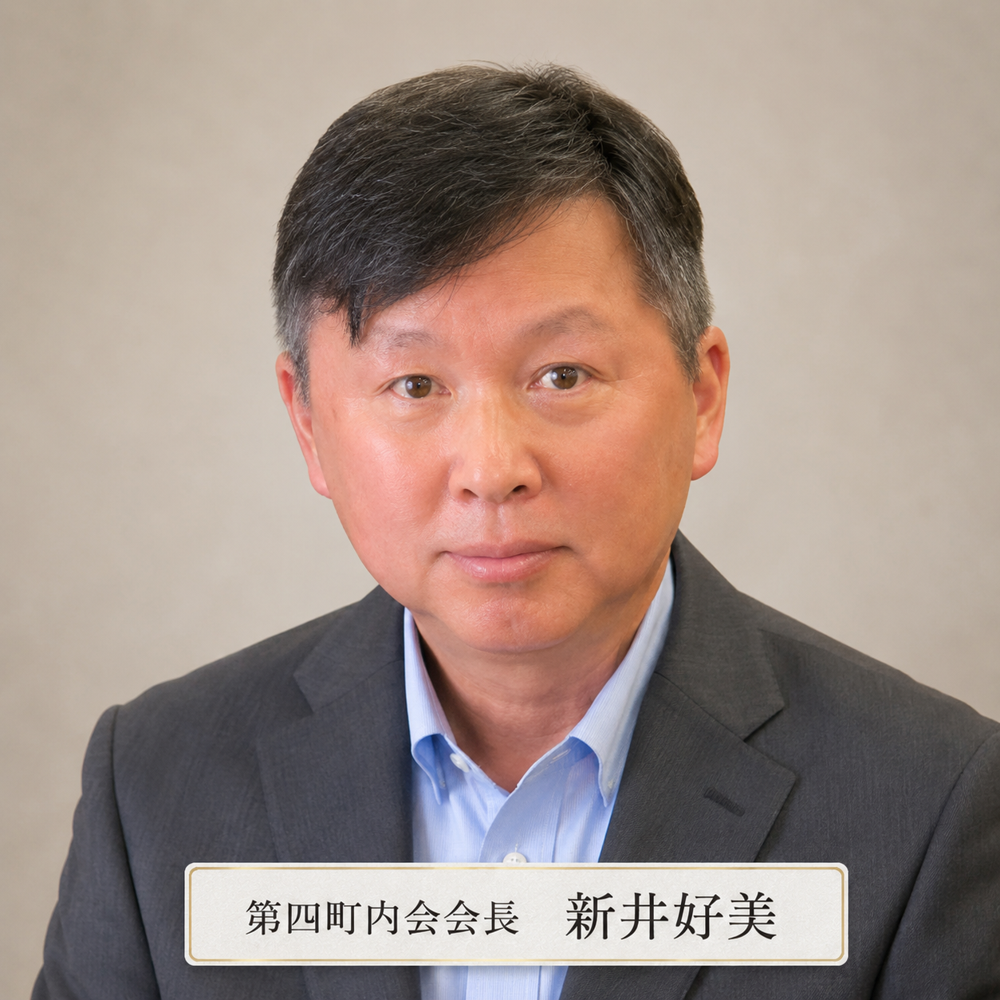

強固な防災ネットワーク
地域の皆様の安全を守るため、防災対策には特に力を入れています。
- 『川島第四町内会館』をはじめ、地域内に計5カ所のいっとき避難場所を確保しています。
- 地域にある8つの福祉施設とも平常時から連携し、有事の際に協力し合える体制づくりを進めています。
川島第四町内会の活動方針、会長あいさつ、基本情報、清掃活動、子ども会をまとめています。
最終更新日：
町内会についての概要を、英語・中国語・韓国語などで確認できます。各ページには、Google翻訳機能を使ってサイト全体を外国語で見る手順も掲載しています。
川島第四町内会は、横浜市保土ヶ谷区東川島町1番地より21番地までの区域を対象に、防災・防犯、清掃活動、子ども会、地域行事などを通じて、安心して暮らせる地域づくりを進めています。
このホームページでは、町内会からのお知らせ、行事予定、防災情報、地域からのお知らせを、スマートフォンでいつでも確認できます。回覧板を見逃した時や、行事の日程を確認したい時にもご活用ください。
川島第四町内会は、地域の安心・安全・交流を大切に活動しています。
こんにちは！私たち川島第四町内会ホームページへようこそ。
当町内会は、約400世帯が暮らす活気ある地域です。私たちは『一致団結』の精神を大切に、お子様からご年配の方まで、誰もが「この街に住んでよかった」と思えるような、温かく魅力的なコミュニティを目指して活動しています。
スマートフォンでは、カードを左右にスワイプしてご覧ください。
地域の皆様の安全を守るため、防災対策には特に力を入れています。
地域沿いに流れる帷子川には四季折々の野鳥が姿を見せ、散歩を楽しむ方々の目を楽しませてくれます。こうした豊かな自然も、私たちの街の自慢のひとつです。
「川島東部連合町内会（第一から第六町内会）」の一員として、近隣地域とも手を取り合い、一歩進んだ安全・安心な街づくりを推進しています。
町内会 会長より、地域の皆様へのごあいさつです。

地域の皆様には、日頃より町内会活動に対し多大なるご理解とご協力をいただき、厚く御礼申し上げます。
今年度より、当町内会の会長を務めさせていただきます、新井 好美（あらい よしみ）でございます。
私たちの街には、豊かな自然と温かなコミュニティがありますが、時代の変化とともに、地域での「つながり」の重要性はますます高まっています。
特に防犯・防災、そして福祉の観点において、「お隣さん・近所の方と顔の見える関係を日頃から築いていくこと」は、何物にも代えがたい大切な備えとなります。いざという時に助け合える、そんな温かな絆こそが、私たちの街の守り神になると信じております。
約400世帯の皆様が、安全で安心して暮らせる社会の実現に向け、私たち役員と地域社会がこれまで以上に連携を深めていくことの重要性を、今改めて強く感じております。
『一致団結』をモットーに、子育て世代からご年配の方まで、皆様と一緒に「この街に住んでいて良かった」と思える魅力ある地域づくりに邁進してまいる所存です。
皆様のより一層のご支援とご協力をお願い申し上げ、就任のご挨拶とさせていただきます。
令和8年5月吉日
町内会 会長 新井 好美
川島第四町内会の活動や地域の様子を、新井会長がXでも発信しています。トップページではタイムラインも確認できます。
川島第四町内会の活動や、地域への思いが紹介された記事です。2024年8月掲載の記事です。
対象エリア・町内会館・世帯数などをコンパクトにまとめています。

街をきれいにしながら、ご近所同士のつながりを深める活動です。
当町内会では、地域の美化運動の一環として、街をきれいにする『さわやか清掃』を実施しています。
この活動は、単に街をきれいにするだけでなく、「作業を通じてご近所同士が挨拶を交わし、人とのつながりを深めること」を大切な目的としています。
「普段はなかなか話す機会がないけれど、清掃をきっかけに顔見知りが増えて安心感につながった」というお声もいただいています。
スマートフォンでは、カードを左右にスワイプしてご覧ください。
日曜日の午前9時から実施します。集合場所は川島第4町内会館です。
集合場所：川島第4町内会館 ／ 雨天中止
ゴミ拾いや環境整備で、誰もが気持ちよく過ごせる街を目指します。
世代を超えた交流の場として、新しいつながりを作ります。清掃のあとの「お疲れ様」の一言が、住みよい街づくりへの第一歩です。
地域の子どもたちが集まり、季節ごとのイベントを通じて楽しい思い出作りをしています。
現在、令和8年度は47名の元気な子どもたちが在籍しています。
その他、年間を通じて各種地域イベントに楽しく参加しています。